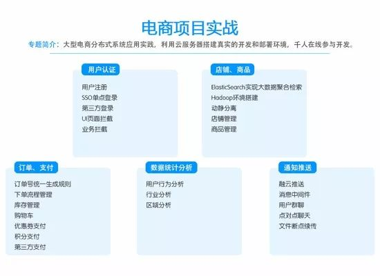

一位阿里资深架构师的学习之路（末尾福利分享）
作者 好文转载
本文要点
阅读和理解是不够的，你还需要记住你学的内容。
进行主动阅读——你的大脑充分理解这些概念并将它变成你自己的东西。
放慢你的大脑，做有创意的笔记，而且反复阅读是没有用的，测验才有效。
经常反思你读过的东西并进行联想。
“他忘记的比你知道的还要多？”，那个人指的就是我。我成为一名开发者已经十多年了，忘记过不少知识。但问题是：我现在知道的，或者说，我记得的，和千禧一代的人（是指1980年代初到2000年代初出生的人）或者Gen X一代的人（是指1960年代初到1980年代初出生的人）一样多么？我的知识量真的比得上别人么？在与这些更年轻更聪明的天生适合做技术的人竞争时，我做对了许多事情。其中我做的最好的一件事情可能就是持续学习。但是我现在需要做的更好一些。我需要停止忘记学到的知识，不论是已经学会很久的，还是刚刚学会的。
这就有了更多疑问：他的技能获取模型分5个级别：新手、高级新手、胜任者、精通者和专家。大多数开发人员在职业生涯的大部分时期都停留在高级新手的阶段。我已经在我的职业生涯中完成了足够多的工作，可以证明我至少是一名胜任者。但是我需要做些什么才能成为精通者和专家？编程技能水平上详细写到“编程人员的7个等级：码农、程序员、计算机科学家、开发人员、工程师、架构师。”
我在职业生涯的大部分阶段一直都使用相同的方法来学习。但是，由于我再有几年就40岁了而且马上会和GenZ一代的人（是指1990年代中期到2000年代中期出生的人）竞争，所以我一直严肃对待自己的学习策略。为此，我阅读了许多关于学习的书、博客和视频。
图书
图书方面，我降低了自己看书的存量，平均每次只看三本不同类型的书。我会将那三本书放到我的桌子上（或者Kindle主页），把其它的书放到书架上。我想，你钟爱的阅读设备一定有一个文件夹管理工具（在Kindle上叫做collections）。因此，我建议你将你的索引库放到类似collections之类的工具里，然后将一些最近要看的书放到主页。我目前喜欢三种不同类型的书，例如：一本是关于Ruby的，一本是关于JavaScript的，以及一本是类似《The Passionate Programmer》的关于学习动力话题的。当我一有空读书的时候，我就会挑选其中一本作为我当前的精神食粮。
博客文章和视频教学
事实上，我现在不太重视图书了。我过去的学习方式是在互联网时代之前形成的，由于这种学习方式，在一二十年里，我几乎忽略了一些经典的视频教学，在这些视频中你能听到关于别人的一些见解和感悟，对于现在的线上教学我是看好的，目前已经进入到了付费学习的学习时代，而且这种付费学习模式将会成为未来的主流学习模式。
我从事的技术进步得如此之快，以至于图书中没有我所需要的信息。
我经常使用的技术太专业了而没有一本权威的图书，但是却有很多的线上教学机构能随时更新讲解
我的千禧一代的同事从视频中以更少的时间学到了更多的知识
分享一份我收藏的系统化java进阶路线图，包括了源码分析、性能优化、微服务架构、工程化、分布式、电商实战。



针对上面的路线图谱，有很多问题不是靠几句话能讲清楚，所以干脆找朋友录制了一些视频，用来回答这些技术。很多问题其实答案很简单，但是背后的思考和逻辑不简单，要做到知其然还要知其所以然。下面给大家截取了部分视频，希望对正处于这个阶段的朋友有所帮助。


很多朋友都在迷茫最近离架构师还有多远，分享的这些技术可以帮助你了解并且能让你步入到架构师的队伍中去，如果对上述的技术感兴趣的可以加视频分享群QQ群号：582505643 欢迎大家进去交流学习，我们一起学习一起进步，我觉得一个对技术感兴趣的人不应该停止脚步，而是一直在学习、钻研的路上。学习最重要的就是氛围，一个人的学习很难坚持，如果是一个专门的学习分享的圈子就能让你的学习不再枯燥。
长按二维码进群领取资料